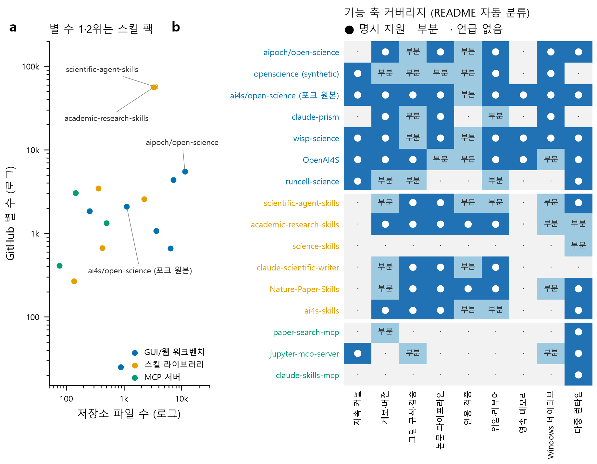
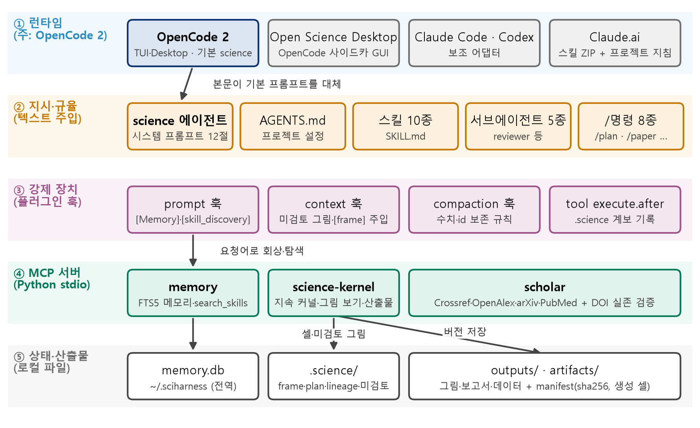
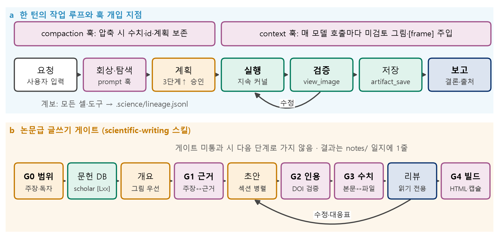
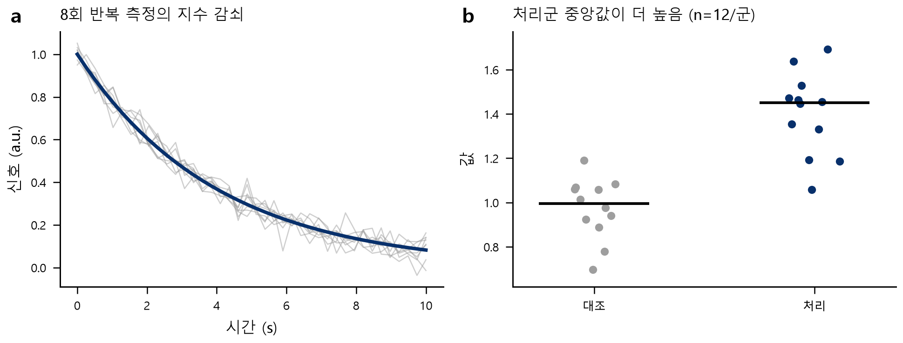
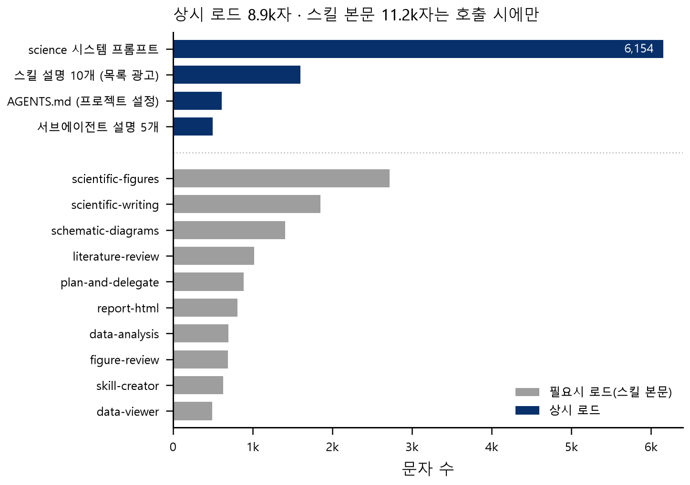

| 항목 | 내용 |
|---|---|
| 작성 | 2026-11-12 · v0.1 |
| 목적 | Claude.ai·Claude Code·Codex·OpenCode에서 Claude Science와 같은 동작(지속 커널 계산, 출판 품질 그림·개념도, 검증된 인용, 논문급 글)을 재현. 주 대상은 OpenCode 2 |
| 산출물 | 하네스 키트 science-harness/(→ GitHub eljja/open-science), 본 보고서, 그림 5종, 비교 데이터, 데이터 뷰어 |
| 결론 | GUI 앱을 새로 만들지 말고 지시문·스킬·MCP·플러그인 훅을 주입하는 팩으로 간다. OpenCode 2의 primary 에이전트 시스템 프롬프트 교체 + 플러그인 훅 + Python MCP 서버 3종으로 핵심 동작을 구현했고, 오프라인 범위 테스트 53/53을 통과했다. OpenCode 실기 실행은 아직 검증하지 못했다 |
.opencode/agents/science.md의 본문이 제공자 기본 프롬프트를 대체한다. 플러그인의 prompt/context/compaction/tool.execute.after 훅이 Claude Science의 주입 블록을 재현한다. MCP 서버 science-kernel·scholar·memory가 계산·문헌·기억을 맡는다.| Claude Science 동작 | 메커니즘 | OpenCode 구현 | 상태 |
|---|---|---|---|
| 결과를 도구로 만든다, 연구 노트 문체 | 시스템 프롬프트 | science 에이전트 본문 1·2절 | 작성 |
| 보고하는 수치는 실행 출력·파일에서만 | 시스템 프롬프트 + 계보 | 3절 + artifact_lineage |
작성·테스트 |
| 지속 Python 커널 | 커널 도구 | science-kernel.python_exec (Jupyter, 세션별) |
테스트 |
| 저장한 그림을 눈으로 확인 | view_image + 강제 |
view_image(크롭) + 미검토 목록 + context 훅 경고 |
테스트(훅 로직) |
| 산출물 버전·해시·생성 셀 | artifact 저장소 | artifact_save(불변 사본, sha256, producing_cells) |
테스트 |
[Memory] 회상 주입 |
메모리 DB + 주입 | memory MCP + prompt 훅 |
테스트(훅 로직) |
[skill_discovery] 주입, search_skills |
스킬 색인 | BM25 어휘 검색 + prompt 훅 | 테스트 |
| 실존 인용만 | 문헌 API | scholar.doi_resolve/verify_citations |
오프라인 오류 처리만 테스트 |
| 계획 → 승인 | 계획 파일 | plan-and-delegate 스킬, /plan |
작성 |
| 독립 트랙 위임 + deviations | 서브에이전트 | 5종 + 출력 계약 | 작성 |
| 압축 후에도 이어가기 | frame 메모장 + 압축 규칙 | .science/frame.md + compaction 훅 |
작성 |
| 안전(외부 텍스트=데이터, 비밀값, 파괴적 작업) | 프롬프트 + 권한 | 10절 + permissions(ask) | 작성 |

| 저장소 | 범주 | 파일 | 별 | 라이선스 | 커널 | 계보 | 그림 | 논문 | 인용 | 위임 | 메모리 | Win | 다중런타임 | 합 |
|---|---|---|---|---|---|---|---|---|---|---|---|---|---|---|
| aipoch/open-science | GUI/웹 워크벤치 | 11,417 | 5,510 | Apache-2.0 | · | ● | △ | ● | △ | ● | · | ● | ● | 12 |
| synthetic-sciences/openscience | GUI/웹 워크벤치 | 7,247 | 4,366 | Apache-2.0 | ● | △ | △ | △ | △ | ● | · | ● | · | 10 |
| ai4s-research/open-science | GUI/웹 워크벤치 | 1,119 | 2,087 | NOASSERTION | ● | ● | ● | ● | △ | ● | ● | ● | ● | 17 |
| delibae/claude-prism | GUI/웹 워크벤치 | 254 | 1,848 | MIT | · | ● | △ | ● | · | △ | · | ● | · | 8 |
| xuzhougeng/wisp-science | GUI/웹 워크벤치 | 3,608 | 1,069 | AGPL-3.0 | ● | ● | △ | ● | △ | ● | ● | ● | ● | 16 |
| PKU-YuanGroup/OpenAI4S | GUI/웹 워크벤치 | 6,379 | 662 | MIT | ● | ● | ● | △ | △ | ● | ● | △ | ● | 15 |
| runcell-ai/runcell-science | GUI/웹 워크벤치 | 886 | 25 | Apache-2.0 | ● | △ | △ | · | · | △ | · | · | ● | 7 |
| K-Dense-AI/scientific-agent-skills | 스킬 라이브러리 | 3,497 | 56,730 | MIT | · | △ | ● | ● | △ | △ | · | △ | ● | 10 |
| Imbad0202/academic-research-skills | 스킬 라이브러리 | 3,326 | 56,356 | NOASSERTION | · | ● | ● | ● | ● | ● | · | △ | △ | 12 |
| google-deepmind/science-skills | 스킬 라이브러리 | 362 | 3,445 | Apache-2.0 | · | · | · | · | · | · | · | · | △ | 1 |
| K-Dense-AI/claude-scientific-writer | 스킬 라이브러리 | 2,229 | 2,567 | MIT | · | △ | ● | ● | △ | ● | · | · | · | 8 |
| Boom5426/Nature-Paper-Skills | 스킬 라이브러리 | 420 | 667 | MIT | · | △ | ● | ● | ● | ● | · | △ | ● | 12 |
| ai4s-research/ai4s-skills | 스킬 라이브러리 | 137 | 268 | MIT | · | ● | ● | ● | △ | △ | · | · | ● | 10 |
| openags/paper-search-mcp | MCP 서버 | 146 | 3,048 | MIT | · | △ | · | · | · | · | · | · | ● | 3 |
| datalayer/jupyter-mcp-server | MCP 서버 | 502 | 1,323 | BSD-3-Clause | ● | · | △ | · | · | · | · | △ | ● | 6 |
| K-Dense-AI/claude-skills-mcp | MCP 서버 | 76 | 411 | Apache-2.0 | · | · | · | · | · | · | · | · | ● | 2 |
(●=명시, △=부분, ·=언급 없음. 합 = 9축 × 0–2점. 2026-11-11 GitHub API 메타데이터 + README 자동 분류.)
읽는 법. 범주별 커버리지 합의 중앙값은 GUI 12, 스킬 팩 10, MCP 서버 3이다. 가장 넓은 것은 사용자 포크의 원본 ai4s-research/open-science(17)로, OpenCode 2 사이드카를 내장한 Tauri 앱이다. 우리 팩은 OpenCode 프로젝트 설정(.opencode/)으로 설치되므로 이 앱 안에서도 그대로 쓸 수 있다(단, 앱이 프로젝트 폴더의 .opencode/를 읽는지는 실기 확인 필요).
| 출처 | 아이디어 | 우리 쪽 구현 |
|---|---|---|
| ai4s-research/open-science | 리뷰어: 읽기 전용, 근거 없으면 침묵, 최대 8개, "옳다"고 단정 금지 | reviewer 서브에이전트 |
| ai4s-research/open-science | present_artifact: 도구 성공 없이는 "표시했다" 금지 |
시스템 프롬프트 3절 |
| ai4s-research/ai4s-skills | 수치 진본성 라벨 measured/simulated/illustrative | 시스템 프롬프트, artifact_save(data_status) |
| Imbad0202/academic-research-skills | 단계별 무결성 게이트 | scientific-writing G0–G4 |
| Boom5426/Nature-Paper-Skills | 섹션별 작성 계약, 방어적 문체·AI 문체 제거 | scientific-writing |
| Boom5426/Nature-Paper-Skills, PKU-YuanGroup/OpenAI4S | 설치기 해시 매니페스트, 백업, dry-run | tools/install.py |
| xuzhougeng/wisp-science | 증거 캡슐(원고 리비전 동결) | capsule_freeze |
| K-Dense-AI/claude-skills-mcp | 스킬 검색 도구 | memory.search_skills + prompt 훅 |
| synthetic-sciences/openscience | 흡수한 외부 스킬의 출처·라이선스 명시 | 외부 스킬 가져올 때 규칙(로드맵) |
| K-Dense-AI/claude-scientific-writer | 다차원 동료평가 체크리스트 | reviewer 확인 순서 6항목 |
| datalayer/jupyter-mcp-server | 커널 MCP 패턴 | 자체 경량 구현(노트북 파일 없이 세션 커널) |
| 기준 | 자체 GUI 앱 | 주입형 팩(채택) |
|---|---|---|
| 동작 품질의 원천 | UI 와 무관 | 지시·스킬·도구·훅 = 품질의 원천 |
| 유지비 | 큼(포크의 데스크톱 앱만 777개 파일, 진행 기록 622KB) | 작음(Python 패키지 + Markdown) |
| 런타임 이식성 | 한 앱에 묶임 | OpenCode / Claude Code / Codex / Claude.ai |
| Windows | 설치기·서명·업데이트 직접 관리 | OpenCode 가 담당, 팩은 Python |
| GUI 가 필요할 때 | — | OpenCode Desktop 또는 Open Science Desktop 재사용 |
권고. 1단계로 팩을 완성하고 실기로 검증한다. GUI 가 꼭 필요하면 새로 만들지 말고 기존 GUI 를 재사용한다. 그래도 부족한 것은 산출물·계보를 보는 얇은 로컬 뷰어(HTML) 정도로 한정한다.

.opencode/agents/<id>.md, frontmatter description, mode: primary|subagent, permissions: [{action, resource, effect}]. 비어 있지 않은 본문은 그 에이전트의 제공자 기본 프롬프트를 대체하고, 프로젝트 지시문·스킬 안내는 그 뒤에 덧붙는다. default_agent: "science".mcp.servers.<이름> = {type: "local", command: [...], environment: {...}}. 이미지 반환이 모델에 그대로 가도록 science-kernel은 codemode: false..opencode/skills/<id>/SKILL.md (.claude/skills, .agents/skills도 탐색)..opencode/commands/*.md, 본문 = 프롬프트 템플릿, $ARGUMENTS..opencode/plugins/ 자동 로드, V2 export default { id, setup(ctx) }. ctx.session.hook("prompt"|"context"|"compaction"), ctx.tool.hook("execute.after").AGENTS.md 만 인식(CLAUDE.md 폴백 없음).agent, prompt, tools, permission, maxSteps)는 폐기. 플러그인 V1 API 는 V2 에서 실행되지 않으므로 같은 파일에 V1 server() 폴백을 함께 두었다(미검증).| 블록 | 생성 | 주입 시점 |
|---|---|---|
[Memory] |
sciharness.hooks → 메모리 검색(한국어 2-gram + 영문 단어, 희소 토큰 가중) |
prompt 훅에서 계산 → context 훅에서 system 에 추가 |
[skill_discovery] |
SKILL.md frontmatter BM25 | 같음 |
[figure_review_pending] |
python_exec 가 outputs/**/figures/*.png 생성 시 자동 등록, view_image 가 해제 |
매 모델 호출(context 훅) |
[frame] |
.science/frame.md 끝 1,500자 |
매 모델 호출 |
| 압축 보존 규칙 | 고정 문구 | compaction 훅 |
| 계보 | 모든 도구 실행 | tool.execute.after → .science/lineage.jsonl |

sciharness 패키지, mcp SDK 1.x·2.x 호환)| 서버 | 도구 | 비고 |
|---|---|---|
| science-kernel | python_exec, kernel_list, kernel_restart, view_image, artifact_save, artifact_list, artifact_lineage, capsule_freeze |
Jupyter 커널(세션별 상태 유지), 출력 6,000자 초과 시 파일로 분리, 인라인 그림 미리보기 반환, 셀 코드 .science/cells/ 보관 |
| scholar | crossref_search, openalex_search, arxiv_search, pubmed_search, doi_resolve, verify_citations |
OpenAlex 는 OPENALEX_API_KEY 없으면 건너뜀. 네트워크 실패 시 "검증되지 않음" 오류 반환 |
| memory | memory_search, memory_read, memory_write, memory_replace, memory_remove, search_skills |
SQLite, entity(profile / project:<이름>), evidence 태그, 민감정보 패턴 거부 |
## 결과 + ## deviations 출력 계약. 서브에이전트의 추가 위임은 금지./plan, /figure-check, /review, /lit-review, /report, /paper, /remember, /frame.sciharness.figures: apply_figure_style()(한국어 글꼴 자동, 3단 글자 크기, CVD 안전 팔레트, 주인공·비교·경보 색), save_figure()(PNG+SVG, 텍스트 겹침 검사, 패널 크롭 좌표, 그림 뒤 데이터 CSV, 사이드카 JSON), panel_letter().sciharness.schematic.Diagram: 계층·상자·화살표 DSL. 그림 1·3 이 이 모듈로 그려졌다.

tools/install.py --target ...)| 런타임 | 상시 지시 | 스킬 | 서브에이전트 | MCP | 강제 장치 |
|---|---|---|---|---|---|
| OpenCode 2 (주) | .opencode/agents/science.md 본문 + AGENTS.md(설정) |
.opencode/skills/ |
.opencode/agents/*.md |
opencode.jsonc mcp.servers |
.opencode/plugins/science-harness |
| Claude Code | CLAUDE.md(핵심+설정) |
.claude/skills/ |
.claude/agents/*.md |
.mcp.json |
.claude/settings.json hooks → python -m sciharness.hooks claude <Event> (Stop 차단 포함) |
| Codex | AGENTS.md(핵심+설정) |
.agents/skills/ |
.codex/agents/*.toml |
.codex/config.toml |
.codex/hooks.json + [features] hooks=true |
| Claude.ai | 프로젝트 지침(변환본) | 스킬 ZIP 업로드 | — | 원격 배포 시 사용자 지정 커넥터 | 없음(규율은 지침에 의존) |
OpenCode 와 Codex 를 한 폴더에 함께 설치하면 핵심 규율이 AGENTS.md에 들어가므로, 설치기가 science 에이전트 본문을 "AGENTS.md를 따르라"는 안내문으로 바꿔 중복을 막는다(테스트됨).
| 테스트 | 결과 | 범위 |
|---|---|---|
tests/smoke_test.py --inproc --offline |
14/14 | 커널 10(상태 유지, 그림 저장+미리보기, view_image, 버전 2회, 계보, 실패 정직 보고, traceback, 캡슐) + 메모리 4(한국어 검색, 민감정보 거부, 스킬 검색) |
tests/test_install.py |
31/31 | 4개 런타임 생성 파일 JSON/TOML/YAML 파싱, 권한, 멱등 재설치, 사용자 수정 보호, 공존 중복 제거 |
tests/test_hooks.py |
8/8 | 회상·탐색 주입, 미검토 그림 Stop 차단 → view_image 후 해제, 무한루프 방지, SessionStart, 계보 |
미검증(다음 단계에서 반드시 확인).
1. OpenCode 2 실기 실행: 이 샌드박스에 Node 가 없고 네트워크도 끊겨 설치하지 못했다. 에이전트·MCP·명령 파일은 공식 문서 스키마에 맞췄지만 실제 로딩은 확인하지 못했다.
2. 플러그인 index.ts 실행: 훅 이름과 등록 방식(session.hook, tool.hook)은 문서 그대로지만, 이벤트 객체의 필드명(sessionID, system, prompt.text)은 방어적으로 처리했을 뿐 실제 값은 확인하지 못했다. 같은 파일의 V1 server() 폴백도 실행 전이다.
3. scholar 네트워크 4건(실제 DOI 확인, 가짜 DOI 거부, Crossref 검색, OpenAlex 키 없음 처리): 이번 실행 중 샌드박스 외부 네트워크가 끊겨 실행하지 않았다.
4. stdio 전송: 이 샌드박스가 Windows 네임드 파이프 생성을 막아 메모리 내 전송으로 테스트했다. 사용자 PC 에서는 python tests/smoke_test.py(stdio)로 확인해야 한다.
5. Codex, Claude Code, Claude.ai 실기 실행.
6. 샌드박스 전용 설정: 커널 테스트에 JUPYTER_ALLOW_INSECURE_WRITES=1을 사용했다(사용자 승인, --inproc 모드에서만). 배포 기본값은 꺼져 있다.
git clone https://github.com/eljja/open-science; cd open-science
conda create -n sciharness python=3.11 -y; conda activate sciharness
pip install -e python # mcp, jupyter_client, ipykernel, matplotlib, pandas, httpx, markdown
python tools/install.py --doctor
python tools/install.py --target opencode --project D:
esearch\myproj
npm install -g @opencode/cli # OpenCode 2
cd D:
esearch\myproj; . .\.opencode\sciharness.env.ps1; opencode
첫 확인 순서: /mcps에서 서버 3종 connected → "y=sin(x) 그림을 그려 저장하고 검증해" → outputs/figures/, .science/lineage.jsonl, artifacts/manifest.jsonl 생성 여부와 [figure_review_pending] 경고가 view_image 후 사라지는지 확인.
| 단계 | 내용 | 완료 기준 |
|---|---|---|
| 1 (현재) | 팩 v0.1, 오프라인 테스트 | 53/53 ✓ |
| 2 | OpenCode 2 실기: 에이전트·MCP·플러그인 훅 필드 확인, 패리티 과제 10개(그림·문헌·논문·위임) 수행 | 과제별 체크리스트 통과 |
| 3 | 외부 스킬 팩(K-Dense, DeepMind science-skills) 선택적 가져오기(출처·라이선스 명시), Codex/Claude Code 실기 | 동일 과제 런타임 간 비교 |
| 4 | 산출물·계보 로컬 뷰어(HTML), 원격 scholar/memory 배포(Claude.ai 커넥터) | 선택 |
한계. 이 하네스는 Claude Science 의 규율과 도구 표면을 재현한다. 모델 자체의 능력(장문 추론, 시각 판단 품질)은 OpenCode 에 연결한 모델에 따라 달라진다. 훅 주입은 문맥을 추가할 뿐이고, 모델이 끝까지 따르도록 강제하는 장치는 미검토 그림 경고(OpenCode)와 Stop 차단(Claude Code/Codex)까지다.